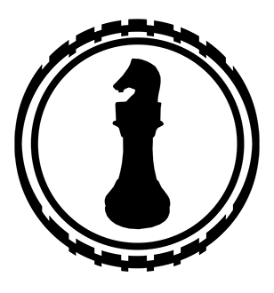
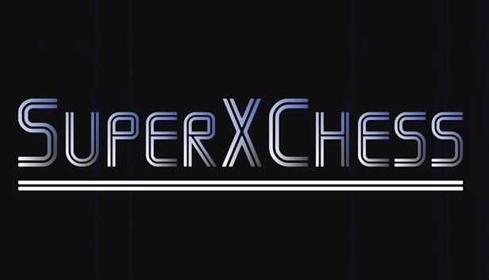
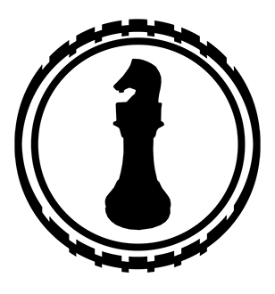
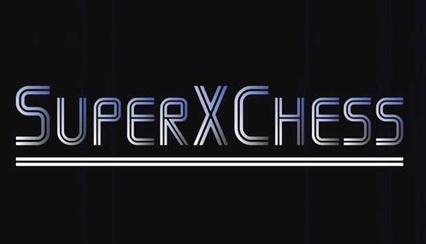

Media
PRESS RELEASE
Super X Chess is coming 24.10. 17:00 (GMT) to Steam.
Espoo, Finland, October 22, 2018: Finland based independent games developer Mlyst is pleased to announce that Super X Chess is coming to Steam for Windows, Mac and Linux.
Super X Chess is a chess game where you can combine your own pieces. The combined piece can then move like both pieces from which it was combined.
Super X Chess is the first game from Mlyst. Mlyst is Miika Pihkala's individual entrepreneurship game company. Miika has worked previously at Frozenbyte (Trine series) as a QA Tester and Game Designer. Super X Chess is available on launch for 2 langauges (English and Simplified Chinese), but will be patched later on to include at least Russian. First week there's launch discount of -10% (normal price: 10.99$/8.99€).
My short backstory: I got into games industry after asking on Humble Frozenbyte Bundle's chat for work (early 2011). It turned out that Frozenbyte was looking for game testers and it was a Finnish company, the country where I live. I got a QA Tester position and got promoted to a Game Designer a couple of years later. I left Frozenbyte by the end of 2015 to pursuit my dreams of making my own games. I learned to make games with unity late 2015/early 2016. I got the idea of this chess game late 2016 and worked on it sometimes more actively and sometimes less actively for 2 years. Now I'm releasing it and I don't know what people think of it, but it's all very exiting and nervous at the same time for me, because I don't know if there's people who will buy it or not. But it's crafted with true love for the game of chess and I'm very proud of it. A fun fact is that without Hearthstone (which was my favourite game for like 2014-2017), this game could have come out a one year earlier. Well Played, Ben Brode & Co.
Email: myfirstname(at)mycompanyname.com
Super X Chess Launch Trailer - Indie DB


 



© Miika Pihkala